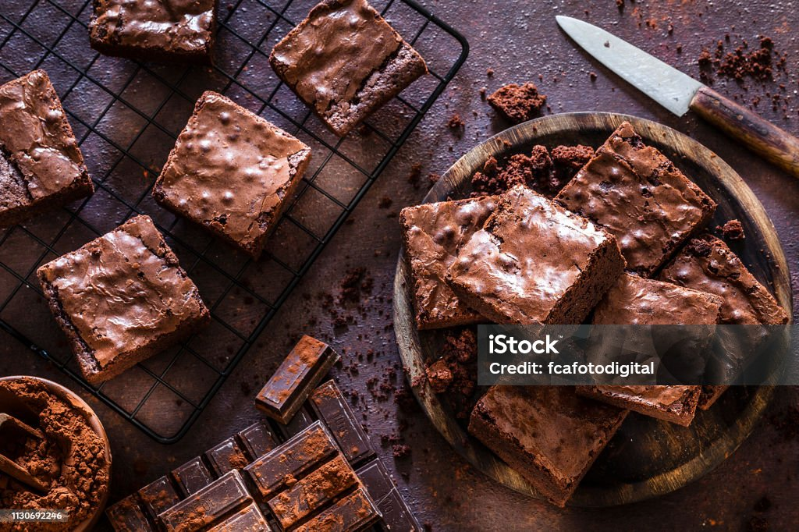

Chocolate Brownies

Brief Description
These rich and fudgy chocolate brownies are a classic dessert that everyone loves. Perfect for satisfying your chocolate cravings!
Ingredients
- 200g dark chocolate, chopped
- 115g unsalted butter
- 200g granulated sugar
- 2 large eggs
- 1 teaspoon vanilla extract
- 130g all-purpose flour
- 1/4 teaspoon salt
- 1/4 teaspoon baking powder
Instructions
- Preheat your oven to 175°C (350°F). Grease and line an 8x8 inch baking pan with parchment paper.
- In a heatproof bowl, melt the dark chocolate and butter together over a pot of simmering water, stirring occasionally. Remove from heat and let cool slightly.
- Whisk the granulated sugar into the chocolate mixture until well combined.
- Add the eggs, one at a time, mixing well after each addition. Stir in the vanilla extract.
- In a separate bowl, whisk together the flour, salt, and baking powder. Gradually fold this into the chocolate mixture until just combined.
- Pour the batter into the prepared pan and spread evenly. Bake for 20-25 minutes, or until a toothpick inserted into the center comes out with a few moist crumbs.
- Allow the brownies to cool completely in the pan before cutting into squares. Enjoy!
Home
Back to top